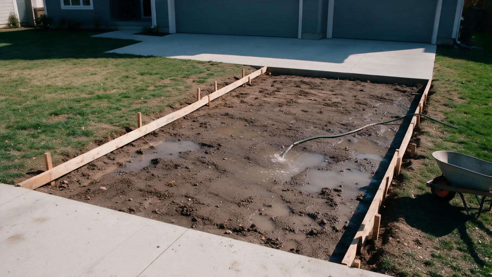
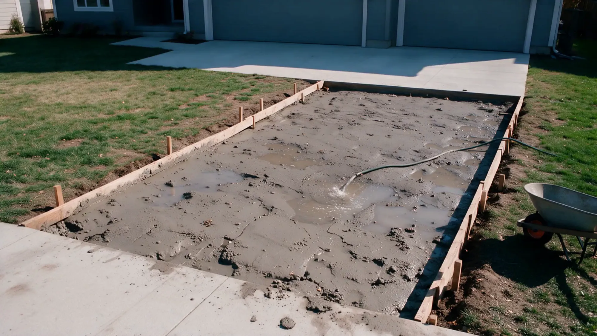

Concrete doesn't do second chances.
Level Best Concrete pours foundations, driveways and walkways across the Phoenix valley. Done right, the first time.
A truck of concrete gives you about ninety minutes.
Then it starts to set. No undo. No second pour.
Skip the prep, add a little water, rush the finish, and you'll see it in the cracks for years.
This is not a weekend project.


The rushed driveway
Water on the base, a hose in the form.
A wet, loose base settles. The slab on top of it follows.
Soupy mix, poured fast.
Extra water makes concrete easy to place and much weaker once it cures.
Then the cracks show up.
No steel, no planned joints, so the slab picks its own places to break.
And then comes the teardown bill.
Breaking out and re-pouring costs more than doing it right once.

Same driveway. Which crew do you want?


The right way
Same job. Done by pros.
- Compacted gravel base, graded to drain
- Rebar on chairs, so steel sits where it belongs
- Mix ordered for the job. No water added on site
- Placed, screeded and floated on schedule
- Joints cut and the slab cured, not left to chance
Poured right. On schedule.
- Licensed, bonded and insured
- Lic. #000000
- Free written estimates
What we pour.
Residential and light commercial. Pick one to see how we do it.
Foundations and slabs
Footings, stem walls and slabs on grade for homes, garages and additions.
See how we do itDriveways
New pours and full tear-outs, sized and sloped so water leaves.
See how we do itSidewalks and walkways
Straight or curved, broom or stamped, with joints where cracks would be.
See how we do itPatios and stamped concrete
Color, pattern and texture for the part of the yard you actually use.
See how we do itRetaining walls and steps
Poured walls and stairs that hold a slope and take foot traffic.
See how we do itRepair and replacement
Cracked, sunken or stained concrete, fixed or taken out and redone.
See how we do itNot sure which one you need?
Our work.
A few recent pours. Ask us for more near you.


How we keep it honest.
Concrete is hard to judge until it's too late to change. So we put the important parts in front of you early.
-
A written price before we start.
Scope, thickness, finish and schedule on paper. If anything changes, you hear it from us before the work, not on the final invoice.
-
No water added at the truck.
We order the mix for the job and pour it as delivered. Extra water makes it easier to place and weaker once it cures.
-
Licensed, insured, on site.
We pull the permits your city asks for and carry the insurance, so you don't carry the risk.
-
We stand behind it.
Every pour is backed by a written workmanship warranty.
Small crew. Big pours. No shortcuts.
Level Best Concrete is a local concrete company that does one thing: flatwork and structural concrete, poured the way the codes and the cement chemistry say it should be.
You'll talk to the person who estimates your job and the crew that pours it. We'd rather turn down a job than rush one.
- License
- Lic. #000000
- Coverage
- Licensed, bonded and insured
- Warranty
- Written, on every pour
Where we work.
Serving the Phoenix valley and the towns around it.
- Phoenix
- Scottsdale
- Tempe
- Mesa
- Chandler
- Gilbert
- Glendale
- Peoria
Not on the list? Call. If the truck can get there, we'll tell you straight whether we can take the job.
Call (480) 555-0142What customers say.
Hover a bubble to read it.Tap a bubble to read it.
They told us the price, showed up when they said, and the driveway looks like it came out of a magazine. Neighbors keep asking who did it.
Explained every step before they poured. No surprises on the invoice.
Replaced a cracked patio that a different contractor had poured two summers ago. Night and day.
Honest about what we needed. They talked us out of tearing out a slab that only needed a repair.
The crew was on time, the site was clean at the end of every day, and the walk is perfectly level.
Called on Monday, estimate on Wednesday, poured the following week. Exactly as promised.
Booking is simple.
-
Call or send the form
Tell us what you want poured and where.
-
We walk the site
Free on-site estimate. We measure, check access and drainage.
-
You get it in writing
One clear quote. Price, scope, schedule.
-
We pour and finish
Prep, forms, pour, finish, cure. Then a walkthrough with you.
Questions we hear a lot.
How long until I can walk or drive on it?
Most slabs take foot traffic after about 24 to 48 hours. Cars and light trucks usually wait around seven days. Concrete keeps gaining strength for roughly 28 days, so we'll give you dates for your job.
Can you pour in very hot or cold weather?
Yes, with the right plan. In heat we adjust the mix, the timing and the pour hours and keep the surface from drying too fast. In cold we protect the slab so it doesn't freeze while it cures.
How thick should a driveway be?
Four inches is common for cars. Heavier vehicles or weak soil call for more thickness, steel, or both. We size it to what will actually drive on it.
Do I need a permit?
It depends on the city and the job. Foundations and structural work almost always do. We handle the paperwork we're responsible for and tell you what we can't.
How do you price a job?
By area, thickness, prep, access and finish. Every estimate is free and in writing, and we explain what's driving the number.
Should concrete be sealed?
For most driveways and patios, yes. A sealer slows staining and surface wear. We'll tell you what suits your finish and when to reapply.
Ready when you are.
Call us, or send the details and we'll call you within one business day.